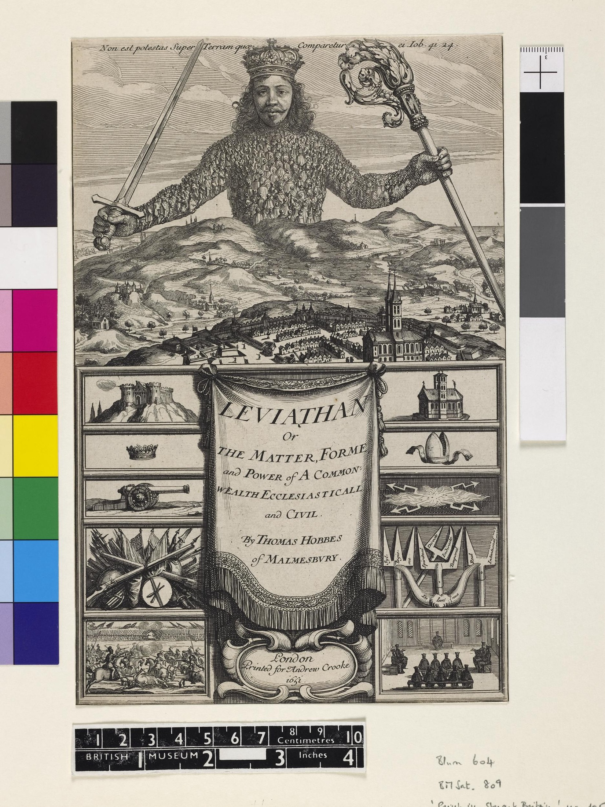
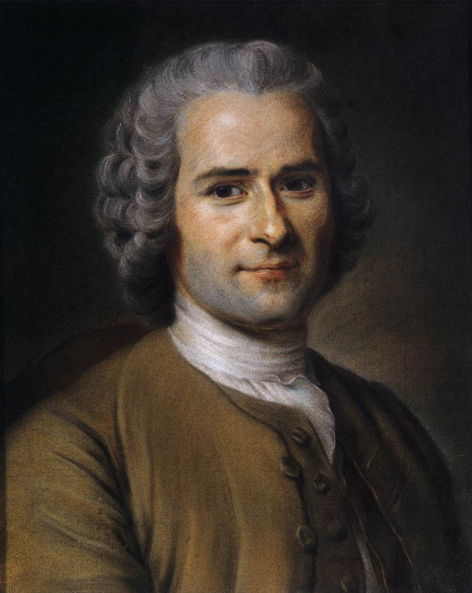

10. gaia · Filosofia politiko modernoa: gizarte-kontratutik liberalismora
Filosofia politiko modernoan sartzeko
Aurreko gaian, Hobbes utzi genuen unibertsoa (eta gizakia bera) higiduran dauden gorputzetara murrizten (§40). Begirada desengainatu hura ez zen metafisikan geratu: Hobbesek berak elkarbizitzara itzuli zuen, eta hortik atera zen modernitateko teoria politiko handienetako bat. Harekin irekitzen da gai hau: lur-eremuz aldatzen da (mundua nola ezagutzen dugun aztertzetik elkarbizitza nola antolatu behar dugun galdetzera), baina hondoko keinu modernoari eusten dio: ezer ez jotzea jakintzat, eta guztiari arrazoiak azter dezakeen oinarri bat bilatzea.
Gaiaren mapa. Orrialde hauek zeharkatzen dituen galdera filosofia bezain zaharra da, eta azken hauteskunde-kanpaina bezain gaurkoa: nondik dator botere politikoa, eta zergatik obeditu behar diogu? Hasteko, ikusiko dugu nola jasotzen duen Aro Modernoak Erdi Aroko erantzuna (boterea Jainkoarengandik jaitsarazten zuena) eta nola hausten duen harekin (§41). Gero, lehen haustura handian geldituko gara, Machiavellirenean: politika moraletik eta erlijiotik bereizten du, den bezala begiratzeko (§42). Gaiaren muina gizarte-kontratuaren teoriaren hiru bertsio handiak dira (Thomas Hobbes, §43; John Locke, §44; Jean-Jacques Rousseau, §45): gizakiak gizarte ororen aurretik imajinatzen dituzte, hortik ondorioztatzeko zer Estatu eraiki behar dugun eta zer mugaren barruan. Eta liberalismo politikoarekin itxiko dugu: Lockeren eta ekonomia berriaren eskutik, gizarte kapitalista dakar argitara (§46).
§41 · Erdi Aroko pentsamendu politikotik modernora
Boterea Jainkoarengandik zetorren. Erdi Aro osoan zehar, botere politikoaren jatorriari buruzko galderak erantzun irmo bat zuen: boterea Jainkoarengandik dator. Hiponako Agustinek historia bi hiritan banatua zuen (lurrekoa, norbere buruarenganako maitasunaren gainean eraikia, eta Jainkoarena, Jainkoarenganako maitasunaren gainean; §26), eta, botere tenporalak bere lekua bazuen ere, haren azken zentzua ordena jainkotiar horren mende zegoen. Mendeak geroago, Akinoko Tomasek Aristotelesen politika esparru kristauan integratuko zuen (§27): agintea naturala eta beharrezkoa da, bai, baina hura gainditzen duen xede batera dago ordenatua, eta Jainkoaren betiereko legearen mende geratzen da. Era batera edo bestera, gobernatzea goitik jasotako botere bat administratzea zen, eta teologiak zuen azken hitza politikaren gainean. Erregeek eta enperadoreek beren agintea jainkozko eskuordetze gisa justifikatzen zuten, eta ideia hori «erregeen eskubide jainkotiarra» formulan kristalduko zen: haren bidez, absolutismoak Jainkoaren aurrean bakarrik zela erantzule aldarrikatzen zuen.
Gizatiar bihurtzen den galdera. Aro Modernoak ez du asmatzen botereari buruzko galdera, baina errotik aldatzen du: haren oinarria zeruan bilatzeari uzten dio, eta gizakiengan beraiengan bilatzen du. Botere politikoa gizonengandik abiatuta azaldu beharreko zerbait bihurtzen da (haien beharrizanetatik, beldurretatik, itunetatik, interesetatik), eta ez Jainkoaren borondatetik. Modernitate osoa zeharkatzen duen keinu sekularizatzaile bera da: zientzia berriak natura kausa naturaz gaindikoetara jo gabe azaltzea hartu zuen xede bezala (§33), politika berriak Estatua erlijioan bermatu gabe azaltzea hartzen du bere gain. Ez da pentsalari hauek guztiak sinesgabeak direnik (Locke kristau zintzoa da), baizik eta boterearen legitimitatea ez dela jada Jainkoarengandik jaitsarazten: behean bilatzen da, gobernatuen adostasunean, kontratuan edo kalkuluan. Politikaren grabitate-zentroa zerutik lurrera lekualdatu da.
Aurrekari zahar bat. Komeni da gogoratzea ideia honek, Erdi Aroko munduaren aldean hain berria izanik, oso aurrekari urruna zuela. Jada o.a.a. V. mendeko Grezian, sofistek eutsia zioten legeak ez direla jainkoen obra, ez naturarena, giza konbentzioa baizik: gizonek ezartzen duten eta alda dezaketen akordio bat (nomos), naturaz denaren (physis) aurrez aurre (§05). Protagorasek, bereziki, itunaren eta komunitatearen borondatearen emaitza ikusten zuen legean, ez agindu sakratu eta ukiezin bat. Intuizio hura, mendeetan zehar pentsamendu kristauaren azpian ehortzia, indar berri batez berragertzen da Aro Modernoan: ordena politikoa giza kontua bada, orduan gizakiok galde diezaiokegu geure buruari (eta galdetu behar diogu) nolakoa izan beharko lukeen.
Ordena naturaletik artifiziora: kontratuaren pentsamendu-esperimentua. Nola erantzuten dio modernitateak boterearen jatorriari buruzko galderari? Batez ere emankortasun izugarriko pentsamendu-tresna batekin: gizarte-kontratuarekin. Aristotelesentzat, gizakia «animalia politikoa» zen berez, eta hiria, animalia hori burutzen den ingurunea (§19); gizartea ez da aukeratzen, geure berezko elementu gisa aitortzen da, ura arrainarena den bezalaxe. Modernoek planteamendua irauli egiten dute: gizartea ez da naturaren datu bat, artifizio bat baizik, gizakiok eraikitzen dugun zerbait. Eta hori erakusteko, imajinatzen dute nolakoak izango ginatekeen gizarte orotatik at, natura-egoera deitzen dioten kondizio batean1. Ez da hipotesi historiko bat (haietako inork ez du uste benetan izan zenik gizon batzuk itun bat sinatzera bildu ziren egunik), pentsamendu-esperimentu bat baizik: gizakiari elkarbizitzak erantsi dion guztia kentzen badiogu, zer geratzen da?, nola jokatuko genuke?, zerk bultzatuko gintuzke egoera hura uztera eta botere baten mende jartzera? Galdera horien erantzunetik ondorioztatzen du filosofo bakoitzak zer-nolako Estatua eraiki behar dugun eta zer mugaren barruan. Gizarte-kontratua, azken batean, gizartearen eta boterearen jatorriari eta oinarriari buruzko auzi zaharra planteatzeko modu modernoa da.
Bi bide politiko modernorantz. Tradizio handi hori zeharkatu aurretik, pentsalari batengan gelditu behar dugu: beste bide batetik ireki zuen aurretiaz bidea. Kontraktualistek galdetzen duten bitartean boterea nola oinarritu beharko litzatekeen legitimoa izateko, XVI. mende hasierako florentziar batek galdera deserosoago eta lurtarrago bat egina zion bere buruari: nola konkistatzen eta kontserbatzen den boterea izatez, nolakoa izan beharko lukeen gorabehera. Harekin, politika moraletik eta erlijiotik askatzen da, eta lehen aldiz bere arau propioak aldarrikatzen ditu. Bira horri (eta haren egileari, Machiavelliri) eskaintzen diogu hurrengo atala.
§42 · Machiavelli
Diagnostiko bat boterearen barrutik. Niccolò Machiavelli (1469-1527) ez zen irakaslea izan, ez teologoa, funtzionarioa baizik: hamalau urtez Florentziako errepublikaren kantzelaritza zuzendu zuen, erregeekin eta aita santuekin negoziatu zuen, eta gertutik ikusi zuen boterea nola egiten eta desegiten den. Medicitarrek hiria berreskuratu zutenean, kargutik kendu, kartzelaratu eta torturatu egin zuten; bere landetxean erbesteraturik, 1513an idatzi zuen ospetsu egingo zuen tratatu laburra, Printzea2. Haren Italia Estatu txikien mosaiko bat zen: elkarrengandik banatuak, Frantziak eta Espainiak behin eta berriro inbadituak, azpijokoak urratuak. Esperientzia mingots hori dago haren pentsamenduaren hondoan: Machiavellik ez du hiri idealaz idazten, politikaz baizik, berak sufritu zuen bezalakoaz.

Politikoaren autonomia. Hor datza haren haustura. Tradizio klasikoak eta Erdi Arokoak beti galdetu izan zuten nola gobernatu behar duen gobernari onak: politika etikaren eta teologiaren kapitulu bat zen, eta «de regimine principum» tratatuek erregeari irakasten zioten justua, zuhurra eta jainkozalea izaten (§41). Machiavellik galdera irauli egiten du. Ez zaio interesatzen boterea nolakoa izan beharko litzatekeen bertutetsua izateko, baizik eta nola konkistatzen eta kontserbatzen den izatez; eta adierazten du «gauzaren egia efektiboari» lotuko zaiola, eta ez errepublika imajinarioei, «inoiz ikusi ez direnei eta existitu direnik jakin ez denei». Keinu horrekin politika moraletik eta erlijiotik bereizten da, eta logika propio batek gidatzen du aurrerantzean: boterearen iraupenarenak. Ez da Machiavellik morala ukatzen duenik (ederki bereizten ditu ongia eta gaizkia), baizik eta eusten diola Estatua kontserbatu nahi duen gobernaria ezin dela beti hari lotuta egon, zeren «gauza guztietan on izatea ofizio duen gizonak porrot egingo baitu on ez diren hainbesteren artean». Politikoaren autonomia hori da haren ekarpen iraunkorra, eta errealismo politikoaren sortzaile bihurtzen du.
Virtù eta fortuna. Bi kontzeptuk artikulatzen dute analisi hori. Lehena virtù da3: Machiavellirengan ez du esan nahi bertute morala, gobernariaren energia, trebezia eta ausardia baizik: erabakitzeko, egokiera aprobetxatzeko eta zirkunstantziei bere borondatea inposatzeko gaitasuna. Bigarrena fortuna da: zoria, aurreikusi ezin dena, gure esku ez dagoen guztia. Politika bien arteko norgehiagoka da. Fortuna, idazten du irudi ospetsu batean, dena arrasatzen duen ibai hazi baten antzekoa da; baina haren uholdeen aurka dikeak eta babesak eraiki daitezke urak bare daudenean; hala, virtùdun gizonak zori hutsaren esku zirudienaren zati handi bat mendera dezake. Machiavelliren kalkuluetan, fortunak gure egintzen erdia gobernatzen du beharbada, eta beste erdia, edo ia, gure erabakiaren esku uzten du. Gobernari trebea unea irakurtzen eta hartara egokitzen dakiena da.
Lehoia eta azeria. Hortik dator haren aholkurik eskandalagarriena. Printzeak «on ez izaten ikasi» behar du, eta gaitasun hori beharraren arabera erabiltzen: lehoiaren indarra, otsoak uxatzen dituena, azeriaren maltzurkeriarekin konbinatu behar du, tranpak saihesten dituenarekin. Ezin bada aldi berean maitatua eta beldurgarria izan, hobe du beldurgarria izatea (beldurra eskertza baino fidagarriagoa da), baina beti zainduz gorrotatua ez izatea, herriaren gorrotoa baita gobernariak benetan eraisten dituena. Eta erlijioak eta moralak, boteretik begiratuta, kohesio-tresna gisa balio dute batez ere: garrantzitsua ez da printzea jainkozalea izatea, hala ematea baizik. Logika horretan laburbiltzen da ondorengoek egotzi zioten esaldia («helburuak bitartekoak justifikatzen ditu»): Machiavellik ez zuen hitz horiekin idatzi, baina ondo kondentsatzen du haren ideia, alegia, politikan egintzak beren emaitzengatik epaitzen direla4.
«Makiavelikoa»: ospe eztabaidatua. Adjektibo gutxi izan dira beren egilearekin makiavelikoa bezain bidegabeak: bihurriaren eta eskrupulurik gabekoaren sinonimoa. Komeni da ñabartzea. Machiavelli, ezer baino lehen, errepublikazale konbentzitua izan zen: Diskurtsoetan antzinako Erromaren askatasuna miresten du eta tiranoez mesfidatzen da, eta irakurle askok Printzean ez dute despoten eskuliburu bat ikusi, baizik eta gaixotasuna deskribatzen duenaren diagnostiko hotza, gaitza antzeman ahal izateko. Benetan inauguratzen duena ez da gaiztakeria politikan (politika bera bezain zaharra), baizik eta hari aurrez aurre begiratzeko eta estali ohi zuen belo errukitsurik gabe deskribatzeko ausardia. Horregatik irekitzen du haren figurak pentsamendu politikoaren aro modernoa.
Machiavellik erantzun gabe uzten duena. Hala ere, haren errealismoa planteatzera iristen ez den galdera batean gelditzen da. Machiavellik azaltzen du boterea nola irabazten eta kontserbatzen den, baina ez zergatik obeditu behar diogun: politikaren mekanika deskribatzen du, ez haren oinarri legitimoa. Beste galdera hori (nondik sortzen da agintea, eta zerk behartzen gaitu haren mende jartzera?) irekita geratzen zen, eta huraxe helduko dio gaiaren gainerakoa betetzen duen tradizio handiak. Erantzuten lehena, giza naturari buruzko begirada florentziarrarena bezain desengainatuarekin, Thomas Hobbes izango da (§43).
§43 · Gizarte-kontratuaren teoria: Thomas Hobbes
Higiduran dagoen gorputzetik elkarbizitzara. Ezagutzen duzu jada Thomas Hobbes (1588-1679), bere materialismoagatik: unibertso osoa (eta gizakia bera) higiduran dauden gorputzetara murrizten zuena zen, eta gogamena, garunaren barne-higiduretara (§40). Begirada mekaniko eta desengainatu bera da orain politikara itzultzen dena, haren obra nagusian: Leviatan (1651). Gizona desirak eta higuinak mugitutako makina bat bada, elkarbizitza ere lege berberekin azaldu beharko da, ordena natural batera edo asmo jainkotiar batera jo gabe. Hobbesek, gainera, Ingalaterrako gerra zibilaren inpaktupean idazten du: gerra hark erregea eta parlamentua jarri zituen aurrez aurre, eta hondoko uste bat utzi zion: ez dago ezer botere irmo baten falta baino okerragorik. Haren filosofia politikoa, neurri handi batean, hausnarketa luze bat da gizartea kaosean berriro eror ez dadin.
Giza natura. Hobbes antropologia ilun batetik abiatzen da. Gizakiok, berez, biziraun nahiak eta norbere interesaren bilaketak mugitutako indibiduoak gara: plazeraren atzetik gabiltza eta oinazetik ihesi, eta nork bereari begiratzen dio. Gainera, funtsean berdinak gara, baina zentzu kezkagarri batean: ez balio bera dugulako, baizik eta ahulenak ere indar aski duelako indartsuena hiltzeko (maltzurkeriaz, aliantza batez edo haren loa aprobetxatuz). Zaurgarritasunean dugun berdintasun horretatik sortzen da segurtasunik eza. Guztiok elkar kaltetu badezakegu, guztiok antzeko gauzak desiratzen baditugu eta baliabideak urriak badira, elkarrekiko mesfidantza saihestezin bihurtzen da: komeni zait ni jo baino lehen nik jotzea.
Natura-egoera: guztien arteko gerra. Imajina ditzagun orain indibiduo horiek, gobernatuko dituen botere komunik gabe. Emaitza, Hobbesen arabera, ez da paradisu inozente bat, guztien arteko gerra bat baizik (bellum omnium contra omnes): ez etengabeko bataila bat, baina bai mehatxu iraunkor bat, non inor ez baitago seguru eta bakoitza baita bakoitzaren etsai posible. «Gizona otso da gizonarentzat» esaera zaharrak (homo homini lupus) laburbiltzen duen egoera da5. Egoera horretan ez da aurrerabiderik posible, inork ez baitu ereiten agian bildu ezingo duena: ez dago industriarik, ez nekazaritzarik, ez arterik, ez letrarik, ez gizarterik; beldurra eta heriotza bortitzaren arriskua baino ez. Gizonaren bizitza, idazten du bere esaldirik ospetsuenean, «bakartia, pobrea, ezatsegina, basatia eta laburra» litzateke orduan6. Komeni da Aristotelesekiko kontrastea neurtzea: greziarrak komunitate politikoan gizakia burutzen den ingurune naturala ikusten zuen lekuan (§19), Hobbesek tranpa hilgarri bat ikusten du gizarte aurreko egoeran, nolanahi ere ihes egin beharrekoa.
Kontratua eta Leviatan. Nola irteten da hortik? Taldekatzea ez da aski: neure burua defendatzeko gutxi batzuekin aliatzen banaiz, besteek gauza bera egingo dute, eta indibiduoen arteko gerra bandoen arteko gerra bihurtuko da. Irtenbide egonkor bakarra da guztiek, aldi berean eta elkarrekiko, justizia beren kabuz hartzeko eskubideari uko egitea, eta hirugarren bati transferitzea (gizon bati edo biltzar bati), botere guztia bil dezan eta bakeari eusteko erabil dezan. Bakoitzak beste guztiekin egindako itun horrek Estatua sorrarazten du; Hobbesek Leviatan izen biblikoa ematen dio, itsas munstro handiarena: «jainko hilkor» bat, zeinari zor baitizkiogu, Jainko hilezkorraren azpian, gure bakea eta gure defentsa. Obedientziaren truke, segurtasuna jasotzen dugu. Eta bada xehetasun erabakigarri bat: subiranoa ez da kontratuko alderdi (ez du ezertarako konpromisorik hartzen mendekoen aurrean), haren emaitza baizik; horregatik, haiek ezin dute haren boterea mugatu, ez errebokatu, kaosari ateak berriro ireki gabe.

Botere absolutua. Hortik dator ondoriorik polemikoena: subiranoaren botereak absolutua izan behar du. Kontrapisurik gabeko botere batek bakarrik, legea, ezpata eta epaia monopolizatzen dituenak, eragotz dezake gerrarako itzulera. Botere hori banatzea (erregearen eta parlamentuaren artean, adibidez) hurrengo gerra zibilaren hazia ereitea litzateke, Hobbesen begietara. Hemen azaleratzen da pertsonaiaren paradoxa. Bazirudien kontraktualistak monarkia absolutuak eraistera zetozela, eta haietako lehenak sendotu egiten ditu; baina zimendu erabat berri baten gainean sendotzen ditu, Leviatanen boterea ez baita jada Jainkoarengandik jaisten (§41), mendekoen beraien akordiotik sortzen baizik. Eta, boterea giza itun batean oinarritu ondoren, irekita geratzen da haren forma eta mugak eztabaidatzeko atea. Ate hori Lockek eta Rousseauk zeharkatuko dute.
Askatasunak, desberdintasuna eta kontratuaren muga. Botere horren pean, mendekoen askatasunak subiranoaren mende daude neurri handi batean, eta urriak dira gaur egun ziurtzat jotzen ditugunen aldean. Hobbesek ez du tirania apetatsua defendatzen (subirano on batek bakerako gobernatuko duela espero du), baina ordena ia guztiaren gainetik jartzen du, eta gizarte-desberdintasunak naturaltzat eta gorputz politikoarentzat baliagarritzat jotzen ditu. Bada, hori bai, kontratuak berak ere zeharka ezin dezakeen muga bat: hartan hain zuzen geure bizitza babesteko sartzen garenez, inor ezin da behartuta geratu bere burua hiltzen uztera. Horregatik, heriotzara kondenatua, epaia justua izanda ere, itunetik aske geratzen da, eta aurre egiteko edo ihes egiteko eskubideari eusten dio, praktikan gutxirako balio badio ere. Zirrikitu txiki horrek axola du: sistemarik autoritarioenean ere, norbere bizitzaren kontserbazioak markatzen du Estatuak zeharkatu ezin duen muga.
Kritika. Hobbesen planteamenduak pisuzko objekzioak jaso ditu, eta komeni da eskura izatea.
- Antropologia. Benetan al gara hain berekoiak? Ankerkeria eta berekoikeria erakusten ditugu, zalantzarik gabe, baina baita eskuzabaltasuna eta altruismoa ere; Hobbesek espeziearen erretratua egiten du haren aurpegirik txarrenarekin bakarrik geratuz.
- Bizkarroia. Kontratuari zigorraren beldurrak bakarrik eusten badio, harrapatua izan gabe delitu egiteko gai dela uste duenak ez du arrazoirik izango hura errespetatzeko.
- Espekulazioa. Natura-egoera erabat imajinarioa da, eta susma daiteke Hobbesek bere ondorio monarkikoak barruan zituela marraztu zuela jada.
- Totalitarismoa. Hain botere itzel eta kontrolik gabea erraz endeka daiteke Estatu batean, babestuko zituela zioen indibiduo berberak zapaltzen dituena.
Hala ere, Hobbesek zerbait erabakigarria lortua zuen (botere politikoa gizakien arteko itun batean oinarritzea, eta ez zeruan), eta abiapuntu horren gainean eraikiko du bere erantzun ia kontrakoa lehen enpirista handia ere izan zenak: John Lockek (§44).
§44 · Gizarte-kontratuaren teoria: John Locke
Enpirista, orain politikan. Ezagutzen duzu jada John Locke ere (1632-1704): lehen enpirista handia izan zen, gogamena orri zuri bat bezala jaiotzen dela eta gure ezagutza guztia esperientziatik datorrela defendatu zuena (§38). Locke bera pentsamendu politiko modernoaren funtsezko figura da. Bere Gobernu zibilari buruzko bi tratatuetan (1690), Ingalaterran erregearen boterea mugatu berri zuen iraultzaren giroan idatziak, kontratuaren arazoari Hobbesenaren ia kontrako erantzuna ematen dio, eskema beretik abiatuta ere: natura-egoera bat, itun bat eta hartatik sortzen den Estatu bat.
Berezko eskubideak. Aldea antropologian hasten da. Indibiduo hobbestarraren aurrean (berekoikeria eta beldur hutsa), Lockek defendatzen du gizakiok berez ditugula zenbait berezko eskubide, gizarte ororen aurrekoak eta Jainkoak emanak; horregatik dira besterenezinak: inork ezin dizkigu kendu, eta guk ere ezin ditugu erabat laga. Nagusiak bizitza, askatasuna eta jabetza dira. Jainkozko oinarri horrek, gainera, ondorio berdintzaile bat dakar, eta komeni da ohartzea: talentuz eta fortunaz berdinak ez bagara ere, guztiok izan gara eskubide berberez hornituak, eta, beraz, legearen aurrean berdinak gara; oso bestelako gauza da denean berdinak izatea (§41).
Natura-egoera bizigarri bat. Horregatik, Lockeren natura-egoera ez da Hobbesen amesgaiztoa. Indibiduoak ez dira guztien arteko gerran bizi, arrazoiak ezagut dezakeen lege natural baten pean baizik; lege horrek agintzen du besteari kalterik ez egitea bere bizitzan, bere askatasunean eta bere ondasunetan. Badira, hori bai, eragozpenak: gatazka bat sortzen denean, nor bere auziaren epaile da, eta ura bere errotara eramateko joera du; hala, liskarrak gaiztotu egiten dira, eta eskubideen defentsa ziurgabe bihurtzen da. Ez da infernu bat, baina bai egoera deseroso eta prekario bat.
Kontratua: arbitro inpartzial bat. Zergatik utzi, orduan, egoera hori? Ez hiltzeko beldurrez, Hobbesengan bezala, komenentziaz baizik, hobeto bizitzeko. Mesede egiten digu arbitro neutral batek, liskarrak ebatzi eta guztion eskubideak legearen nagusitasunaren bidez bermatuko dituenak (bereziki jabetzarena); eta gizarteko bizitzak, gainera, elkarlanean aritzea eta bakarka lortuko ez genituzkeen xedeei ekitea ahalbidetzen digu. Horregatik egiten dugu ituna. Baina (eta hemen dago gakoa) eskubideak besterenezinak direnez, kontratuan sartzean ez ditugu lagatzen: gorde egiten ditugu, eta Estatua, hain zuzen, haiek hobeto babesteko jaiotzen da. Ematen dugun boterea mugatua eta baldintzapekoa da, ez absolutua.
Gobernu mugatua. Abiapuntu honetatik Hobbesenaren kontrako arkitektura instituzional bat sortzen da. Gobernu onena ez da subirano ahalguztidun bat, gobernu mugatu bat baizik (monarkia konstituzional bat edo ordezkaritza-erregimen bat), berezko eskubideak bermatuko dituena eta aniztasuna eta tolerantzia errespetatuko dituena, baita erlijiosoa ere. Boterea kontzentratu eta gehiegikerian eror ez dadin, haren banaketa defendatzen du Lockek: legeak egiteko ahalmenak (botere legegileak) haiek aplikatzekoarengandik (betearazlearengandik) bereizita egon behar du, gobernatzen duena ere legearen mende gera dadin7. Eta gobernuaren legitimitatea oso-osorik gobernatuen adostasunean datza: botereak bere eginkizuna traizionatzen badu eta tiraniko bihurtzen bada, herriak erresistentzia-eskubideari eusten dio, matxinatzeko eta hura ordezteko eskubideari. Hobbesekiko kontrastea ezin handiagoa da: Leviatan errebokaezina zen lekuan, Lockeren gobernua errebokagarria da bere izaeraz beraz.
Jabetza eta desberdintasuna. Locke jabetza pribatuaren teoriko moderno handia ere bada, eta hemen haren pentsamendua arantzatsuago bihurtzen da. Nondik sortzen da edukitzeko eskubidea? Norberaren lanetik: bakoitza bere gorputzaren jabe denez, bere eskuen ahaleginarena ere bada, eta nire lana naturako zerbaitekin nahasten dudanean (soro bat landu, fruitu bat bildu), neure egiten dut. Hortik ondorioztatzen du desberdintasun ekonomikoak legitimoak direla: lan egiten badut eta asko ekoizten badut, aberasteko eskubidea dut; ahalegintzen ez denak ez du eskubiderik oparotasun bererako. Lockek ez du defendatzen guztiok ondasunetan berdinak izatea, eskubideetan eta legearen aurrean baizik. Askatasunaren eta jabetzaren aldeko defentsa bateratu horrek eragin erabakigarri bihurtu zuen Estatu Batuetako Konstituzioan eta geroko pentsamendu liberal osoan (§46); ziur asko antzemango diozu haren oihartzuna gaurko diskurtso politiko batean baino gehiagotan.
Kritika. Hiru objekzio nagusi zuzendu zaizkio.
- Jainkoaren papera. Lockeren berezko eskubideak Jainkoarengan bermatzen dira, eta, oinarri hori kenduta, haren natura-egoera Hobbesenaren antzekoagoa litzateke berak nahiko lukeena baino.
- Lege naturalari buruzko adostasunik eza. Lockek uste du arrazoiak zailtasunik gabe aurkituko dituela berezko eskubideak, baina beste pentsalari batzuek, arrazoia erabiliz haiek ere, oso zerrenda desberdinak landu dituzte; berak aurresuposatzen duen adostasuna ez da existitzen.
- Klase-alborapena. Tratatua gizarte zibilaren barrutik idazten denez jada, jabetza den bezalakoaren justifikazio gisa funtzionatzen bukatzen du (baita desberdinenarena ere); Locke bera iristen da esatera bere morroien lanaren fruitua berea dela. Guztion eskubideak babestea agintzen zuen teoriak, batez ere, jada zerbaiten jabe direnenak babesten ditu.
Hala ere, haren eragina itzela izan zen, eta askatasunaren eta jabetzaren aldeko haren defentsatik jaioko da gaia ixten duen korrontea. Baina lehenago entzun behar diogu planteamendu honi buelta osoa eman zionari, konbentziturik gizarteak, gizakia babestu ordez, hondatu egin zuela: Jean-Jacques Rousseauri (§45).
§45 · Gizarte-kontratuaren teoria: Jean-Jacques Rousseau
«Gizona aske jaiotzen da…». Jean-Jacques Rousseau (1712-1778), Genevan jaioa, hirugarren kontraktualista handia da, eta hiruretan kezkagarriena. Izpiritu errebelde eta jazarria (haren liburu batzuk debekatu eta erre egin zituzten, eta bera ihesi bizi behar izan zen), bere Gizarte-kontratua obra (1762) bere arazo osoa laburbiltzen duen esaldi batekin irekitzen du: «Gizona aske jaiotzen da, eta alde guztietan kateaturik dago». Aske jaiotzen bagara, nola bizi gara mendean? Eta, batez ere, zerk egin lezake legitimo mendekotasun hori? Horri erantzuteari eskaintzen dio liburua.

Gizona ona da; gizarteak hondatzen du. Rousseauk Hobbesen antropologia irauli egiten du. Ingelesak otso bat ikusten zuen lekuan (§43), berak izaki naturalki on bat ikusten du, kontserbazio-senak eta lagun hurkoarenganako berezko gupida batek mugitua. Natura-egoeran gizakia ez da gaiztoa: zibilizazioa da (jabetza, desberdintasuna, banitatea, lehia) hura hondatu duena, bere Desberdintasunaren jatorriari buruzko diskurtsoan (1755) argudiatua zuenez. Baina Rousseau ez da basoetara itzultzea predikatzen duen inozo bat: badaki ez dagoela atzera-biderik, eta gizarteko bizitzak onura izugarriak dakartzala. Haren arazoa beste bat da, eta zailagoa.
Arazoa: gizartean bizitzea askatasuna galdu gabe. Rousseaurentzat, askatasuna ez da luxu bat, gizaki egiten gaituena baizik: hari uko egitea gizon izateari uztea litzateke. Hortik haren erronka. Hobbesek eta Lockek onartzen zuten, gizartean sartzean, gure askatasuna murriztu egiten dugula segurtasunaren edo babesaren truke. Rousseau ez da horrekin konformatzen: elkartzeko forma bat bilatzen du, non bakoitzak, guztiekin elkartuta ere, bere buruari baino ez baitio obedituko, eta lehen bezain aske izaten jarraituko baitu. Itxuraz ezinezko horren irtenbidea da haren ekarpen handia: borondate orokorra.
Borondate orokorra eta guztien borondatea. Ituna egitean, indibiduoak ez dira kanpoko subirano baten mende jartzen: gorputz politiko batean urtzen dira, «ni komun» batean, zeinaren borondatea borondate orokorra baita: guztion onera zuzentzen dena, komunitateari halakoa den aldetik komeni zaionera. Komeni da kontu handiz bereiztea guztien borondatetik, hau bakoitzaren desira partikularren batura hutsa baita. Adibide batek argitzen du: guztiek zerga gutxiago ordaindu nahi izatea guztien borondatea da; baina haiek jaisteak komunitatearen ongizateari kalte egiten badio, borondate orokorra haiei eustea da. Lehenengoak interes pribatuari begiratzen dio; bigarrenak, komunari. Eta lege legitimoa ez da borondate orokorraren adierazpena besterik.
Askatasun zibila. Hemen ebazten du Rousseauk bere erronka, paradoxa bat ukituz. Borondate orokorra obeditzen dudanean, ez diot beste bati obeditzen: guztion ona nahi duen nire zatiari obeditzen diot, eta, beraz, neure buruari. Horixe da askatasun zibila, gogoak ematen duena egiteko askatasun natural hutsa baino gorago dagoena: ez apetaren askatasuna, bere buruari legeak ematen dizkion hiritarrarena baizik. Prezioa altua da (sarritan nire desira partikularrak sakrifikatu beharko ditut interes orokorraren alde), baina trukean beste ordena bateko askatasun bat irabazten dut, berdinen artean bizi den gizaki bati dagokion bakarra.
Subiranoa, gobernua eta legegilea. Doktrina honetatik hainbat tesi instituzional ondorioztatzen dira. Subiranotasuna beti herrian datza: subiranoa hiritar guztien multzoa da, eta ezin da besterendu, ez zatitu. Subiranoaz bestelakoa da gobernua, borondate orokorraren betearazle hutsa: subiranoak erabakitzen duena aplikatzeaz arduratzen den pertsona-taldea, eta hark kargutik ken dezakeena. Eta, legeek borondate orokorra gorpuztu behar dutenez, alderdi-interesetarantz desbideratu gabe, Rousseauk haien idazketa legegile bati gordetzen dio: figura desinteresatu bat, zeinaren zeregin bakarra baita herriari bere egoera konkretura egokitutako legeak ematea, bera gobernatu gabe (legeak egiten dituenak ez baititu betearazi behar, haiek bere alde okertzeko tentazioan ez erortzeko).
Gobernu motak. Gobernuaren formari dagokionez, Rousseauk hiru bereizten ditu (demokrazia, aristokrazia eta monarkia), eta ez du bakar bat inposatzen: onena herri bakoitzaren tamainaren eta zirkunstantzien araberakoa da. Haren joera, hori bai, garbia da. Monarkiaz mesfidatzen da, batez ere oinordetzazkoaz, boterea sehaskaren zoriaren esku uzten baitu («haurren, munstroen edo gauzaezen» esku), eta nahiago du hautespenezko aristokrazia bat edo, bideragarria denean, zuzeneko demokrazia, non hiritar bakoitzak auzi guztiak bozkatzen baititu; baina azken honek, ohartarazten du, Estatu txikietan bakarrik funtzionatzen du. Gure sistema parlamentarioak, izan ere, hautatutako aristokraziak lirateke harentzat, ez benetako demokraziak.
Kritika. Rousseauren proposamenak, Frantziako Iraultzan eragin itzela izan zuenak, bi funtsezko eragozpen sorrarazi ditu.
- Askatasunarentzako arriskua. Borondate orokorrak beti agintzen badu, zer gertatzen da «gehiengoaren onerako» emandako lege batek gutxiengo bat zapaltzen duenean? Rousseau ez zen zapalkuntzaren aldekoa, baina haren doktrina harantz labaindu daiteke: borondate orokorra aipatuz, Estatu batek bere irizpidea inposa liezaieke desadostasunean daudenei «beren onerako». Hortik haren esaldirik beldurgarriena: hura obeditzeari uko egiten duena «aske izatera behartuko da».
- Hura ezagutzearen arazoa. Nola dakigu, praktikan, zertan datzan borondate orokorra? Jendeak izatez bozkatzen duenarekin (guztien borondatearekin) bat ez badator, nork erabakitzen du zein den benetako guztion ona, eta zer aginterekin?
Hiru erantzun galdera berari. Rousseaurekin ixten da kontraktualista handien hirukotea. Hirurak keinu beretik abiatzen dira (gizakiak gizartearen aurretik imajinatzea, boterea itun batean oinarritzeko), baina hartatik ia kontrako Estatuak ateratzen dituzte: Hobbesen absolutismotik Lockeren gobernu mugatura eta Rousseauren herri-subiranotasunera. Gaiaren amaiera liberalera igaro aurretik, komeni da aurrez aurre ikustea:
| Ardatza | Hobbes (§43) | Locke (§44) | Rousseau (§45) |
|---|---|---|---|
| Obra gakoa | Leviatan (1651) | Gobernu zibilari buruzko bi tratatu (1690) | Gizarte-kontratua (1762) |
| Giza natura | Berekoia eta beldurtia; «gizona otso da» | Askea eta arrazoiduna, berezko eskubideekin | Berez ona; gizarteak hondatzen du |
| Natura-egoera | Guztien arteko gerra | Baketsua baina ziurgabea: arbitro bat falta da | Askea eta inozentea |
| Itunaren arrazoia | Beldurretik eta heriotza bortitzetik ihes egitea | Bizitza, askatasuna eta jabetza hobeto babestea | Gizartean bizitzea askatasuna galdu gabe |
| Zer lagatzen den | Eskubide guztiak, bizitzari eustekoa izan ezik | Ezer ez: eskubideak besterenezinak dira; epaitzeko boterea bakarrik | Askatasun naturala, askatasun zibilaren truke |
| Subiranoa eta boterea | Absolutua eta errebokaezina (Leviatan) | Mugatua, banatua eta errebokagarria | Herri osoa (borondate orokorra); subiranotasun zatiezina |
| Gobernu hobetsia | Monarkia absolutua | Monarkia konstituzionala edo ordezkaritza-erregimena | Zuzeneko demokrazia edo hautespenezko aristokrazia |
| Erresistentzia-eskubidea | Ez | Bai, tiraniaren aurrean | Herria beti da subirano |
| Ondarea | Estatu modernoa; itunean oinarritutako absolutismoa | Liberalismoa; botere-banaketa; AEBetako Konstituzioa | Herri-subiranotasuna; Frantziako Iraultza |
§46 · Liberalismo politikoa eta gizarte kapitalistaren jatorria
Kontratutik askatasun indibidualera. Kontratuaren hiru bertsioetatik, Lockerena izan zen praktikan indarrik handienaz erroak bota zituena. Hartatik jaiotzen da liberalismoa, indibiduoaren askatasuna erdigunean jarri eta Estatuari hura errespetatzea eskatzen dion korronte politikoa. Haren ideiak ezagutzen dituzu jada: botereak baino lehenagoko berezko eskubideak, gobernu mugatu eta banatua, legearen nagusitasuna, tolerantzia eta adostasunean oinarritutako legitimitatea (§44). Liberalismoak irauli egiten du indibiduoaren eta Estatuaren arteko harreman zaharra: boterea ez da gehiago indibiduoak bere burua zor dion xede bat; hiritarren eskubideen zerbitzura dagoen tresna bat da aurrerantzean, eta zenbat eta gutxiago sartu haien bizitzetan, hobe. Eskubide horien artean, batek pisu erabakigarria hartuko du: jabetzarenak.
Jabetzatik merkatura: Adam Smith. Zeren liberalismoa ez baita boterearen teoria bat bakarrik; ekonomiaren teoria bat ere bada, eta batez ere hori. Bakoitza bere lanaren fruituaren jabe bada (§44) eta hartaz baliatzeko aske, koherenteena da pertsonei uztea beren interesaren arabera ekoizten, erosten eta saltzen, Estatuaren esku-sartze txikienarekin. Ideia horrek bere formulazio klasikoa Adam Smith eskoziarrarengan (1723-1790) aurkitzen du: haren Nazioen aberastasuna obra (1776) ekonomia modernoaren jaiotza-agiria da8. Smithek ikusten du ezen, indibiduo bakoitzak bere etekina merkatu aske batean bilatzen duenean, emaitza ez dela kaosa, multzoari mesede egiten dion ordena bat baizik, «esku ikusezin» batek berekoikeria partikularrak oparotasun orokorrerantz koordinatuko balitu bezala. Lan-banaketak aberastasuna biderkatzen du; lehiak, eta ez plangintzak, arautzen ditu prezioak eta ekoizpena. Estatuak, beraz, ez du esku hartu behar: jabetza eta kontratuak bermatu, eta egiten utzi (laissez faire).
Lehia eta lankidetza. Komeni da irudi honen aurpegi bikoitzari erreparatzea, curriculumak berak azpimarratzen baitu. Liberalismo ekonomikoak lehia goresten du (bakoitzak besteekin norgehiagoka dihardu bere posizioa hobetzeko), eta, hala ere, uste du norgehiagoka horretatik bilatu gabeko lankidetza bat sortzen dela: espezializatzean eta trukatzean, indibiduoak elkarren mende geratzen dira azkenean, eta elkarri zerbitzatzen diote nahi gabe ere. Ez dugu gure afaria harakinaren, garagardogilearen eta okinaren onberatasunetik espero (idazten du Smithek bere esaldirik aipatuenean), bakoitzak bere interesari jartzen dion arduratik baizik; eta, interes horri esker, afaltzen dugu. Merkatu-gizartea, hala, interes pribatuzko hariekin ehundutako lankidetza-sare zabal gisa aurkezten da.
Gizarte kapitalistaren jaiotza. Elementu hauen elkargunetik (jabetza pribatua, askatasun indibiduala, merkatu askea eta Estatu mugatua) sortzen da gizarte kapitalistaren esparru ideologikoa: XVIII. mendetik aurrera Mendebaldean nagusituko den antolaketa ekonomiko eta sozialaren forma. Haren protagonista gorabidean den klase bat da, burgesia: Erregimen Zaharraren pribilegioen aurrean, liberalismoak agintzen duen huraxe eskatzen du: ekiteko askatasuna, jabetzarentzako segurtasuna eta legearen aurreko berdintasuna. Ez da kasualitatea iraultza liberal handiek (Ipar Amerikakoak, Frantziakoak) aldi berean goratzea indibiduoaren eskubideak eta askatasun ekonomikoa. Liberalismo politikoa eta kapitalismoa elkarri lotuta jaiotzen dira.
Promesa eta ifrentzua. Alabaina, promesa horrek badu ifrentzu bat, laster seinalatuko dena. Liberalismoak bermatzen duen berdintasuna formala da (eskubideen eta legearen aurreko berdintasuna), ez materiala; eta, Lockeri egindako kritikak jada iradokitzen zuenez (§44), jabe askeen gizarte bat izan daiteke, aldi berean, gizarte sakonki desberdin bat, non ezer ez duenaren askatasunak oso gutxi balio baitu. Tentsio horren gainean (askatasun formalaren eta desberdintasun errealaren artekoa, lehiaren eta justiziaren artekoa) altxatuko da geroko pentsamenduaren zati handi bat: Bentham eta Mill liberalek beraiek erabilgarritasunaz eta zoriontasunaz egindako hausnarketa etikoa, bere lekuan ikusiko duguna (§53); Marxen kritika suntsitzailea, zeinarentzat ordena kapitalista ez baita naturala, ez betierekoa, etapa historiko bat gehiago baizik (§57); eta XX. mendeko saioak haren desberdintasunak zuzentzeko askatasunari uko egin gabe, Rawlsena eta ongizate-estatuarena kasu (§71). Baina hori guztia datozen kapituluetakoa da. Lehenago, ideia politiko hauei zoru komun gisa balio izan zien arrazoiarekiko eta aurrerabidearekiko konfiantzak gai bat eskatzen du beretzat: Ilustrazioak (11. gaia).
Esapideak arreta eskatzen du bere bi osagaietan, eta komeni da kontuz irakurtzea. Hemen «egoera» ez da Estatua (antolaketa politikoa), aurkituko ginatekeen egoera edo kondizioa baizik; jatorrizko hizkuntzetan hitz bera erabiltzen da bietarako («estado», «state»), eta hortik dator nahasteko arriskua. Eta «natura-» horrek ez du esan nahi natura betean bizitzea, gizarteak moldatu aurretik giza natura nolakoa izango litzatekeen baizik. Erreparatu bi osagaiak minuskulaz doazela, hain zuzen ere Estatuarekin eta Naturarekin ez nahasteko.↩︎
Printzea eskuizkribu gisa ibili zen eskuz esku Machiavelli bizi zela, eta ez zen inprimatu 1532ra arte, hura hil eta bost urtera. Aldi berean, obra luzeago eta errepublikazale bat idatzi zuen, Tito Livioren lehen dekadari buruzko diskurtsoak, antzinako Erromaren historiaren iruzkina; komeni da bi aurpegiak gogoan izatea, egilearen ospea ia lehenengoaren gainean bakarrik eraiki baitzen.↩︎
Italierazko terminoa gorde dugu, etzanean, eguneroko hizkerako «bertute» moralarekin ez nahasteko: gauza desberdinak dira, eta hortxe dago, hain zuzen, koska.↩︎
Formula zehatza ez da haren obran ageri; geroagoko sintesi bat da. Idazten duena da, gobernarien ekintza epaitzen denean, «emaitzari begiratzen» zaiola: printze batek garaitzea eta Estatua kontserbatzea lortzen badu, bitartekoak «beti ohoragarritzat joko dira». Ñabardurak axola du: Machiavellik deskribatzen du boteretsuak izatez nola epaitzen diren, arau moral unibertsal bat diktatu baino gehiago.↩︎
Hobbesek latindar komediatik hartzen du esaera, baina ahaztu ohi den ohar batekin osatzen du: gizona «jainko ere bada gizonarentzat». Biak dira egia, dio, nondik begiratzen den: otso, elkarren aurkako komunitateen artean; jainko, herrikideentzat, gizarte ondo ordenatu batean bizi direnean. Esaldia ez da, beraz, ankerkeriaren gorespen bat, botere komuna falta denean gertatzen denaren diagnostikoa baizik.↩︎
«Halako baldintzetan ez dago lekurik industriarentzat, haren fruitua ziurgabea baita; eta, ondorioz, ez dago lurraren lanketarik, ez nabigaziorik […], ez arterik, ez letrarik, ez gizarterik; eta, guztietan okerrena dena, etengabeko beldurra eta heriotza bortitzaren arriskua dago; eta gizonaren bizitza bakartia, pobrea, ezatsegina, basatia eta laburra da» (Leviatan, XIII. kap.).↩︎
Zehatz esanda, Lockek hiru botere bereizten ditu (legegilea, betearazlea eta federatiboa, hau da, gerrarena, bakearena eta itunena), eta legegilea jotzen du gorentzat. Sailkapen klasikoa (legegilea, betearazlea eta judiziala, elkarren kontrapisu gisa pentsatuak) geroagokoa da: Montesquieuk formulatu zuen Legeen espirituan (1748). Komeni da Lockeri Montesquieuren bertsioa ez egoztea, nahiz eta boterea banatuz mugatzeko ideia harengandik abiatu.↩︎
Komeni da Smith berekoikeriaren apostolu gisa ez karikaturizatzea. Filosofia moraleko katedraduna izan zen, eta bere beste obra handian, Sentimendu moralen teorian (1759), sinpatia (bestearen lekuan jartzeko gaitasuna) egiten du bizitza etikoaren zimendu. «Esku ikusezin» ospetsua, izan ere, oso gutxitan ageri da haren obran; ondorengoek berea baino liberalismo erradikalago baten lelo bihurtu dute.↩︎